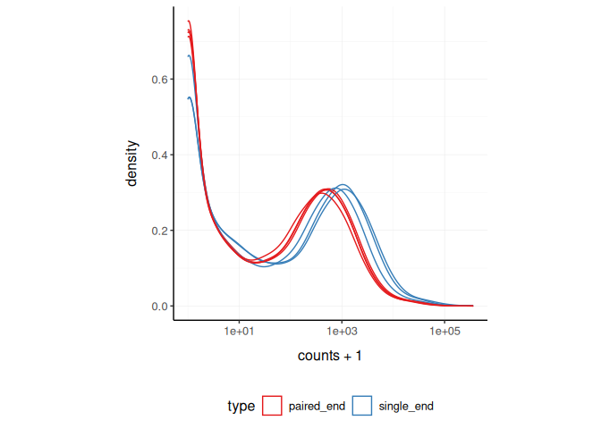

Brings SummarizedExperiment to the tidyverse!
website: stemangiola.github.io/tidySummarizedExperiment/
Please also have a look at
- tidySCE for tidy manipulation of Seurat objects
- tidyseurat for tidy manipulation of Seurat objects
- tidybulk for tidy high-level data analysis and manipulation
- nanny for tidy high-level data analysis and manipulation
- tidygate for adding custom gate information to your tibble
- tidyHeatmap for heatmaps produced with tidy principles
Introduction
tidySummarizedExperiment provides a bridge between Bioconductor SummarizedExperiment
@morgan2020summarized
and the tidyverse
@wickham2019welcome
. It creates an invisible layer that enables viewing the Bioconductor SummarizedExperiment object as a tidyverse tibble, and provides SummarizedExperiment-compatible dplyr, tidyr, ggplot and plotly functions. This allows users to get the best of both Bioconductor and tidyverse worlds.
Functions/utilities available
| SummarizedExperiment-compatible Functions | Description |
|---|---|
all |
After all tidySummarizedExperiment is a SummarizedExperiment object, just better |
| tidyverse Packages | Description |
|---|---|
dplyr |
Almost all dplyr APIs like for any tibble |
tidyr |
Almost all tidyr APIs like for any tibble |
ggplot2 |
ggplot like for any tibble |
plotly |
plot_ly like for any tibble |
| Utilities | Description |
|---|---|
tidy |
Add tidySummarizedExperiment invisible layer over a SummarizedExperiment object |
as_tibble |
Convert cell-wise information to a tbl_df
|
Create tidySummarizedExperiment, the best of both worlds!
This is a SummarizedExperiment object but it is evaluated as tibble. So it is fully compatible both with SummarizedExperiment and tidyverse APIs.
It looks like a tibble
pasilla_tidy
## # A tibble: 102,193 x 5
## sample condition type transcript counts
## <chr> <chr> <chr> <chr> <int>
## 1 untrt1 untreated single_end FBgn0000003 0
## 2 untrt1 untreated single_end FBgn0000008 92
## 3 untrt1 untreated single_end FBgn0000014 5
## 4 untrt1 untreated single_end FBgn0000015 0
## 5 untrt1 untreated single_end FBgn0000017 4664
## 6 untrt1 untreated single_end FBgn0000018 583
## 7 untrt1 untreated single_end FBgn0000022 0
## 8 untrt1 untreated single_end FBgn0000024 10
## 9 untrt1 untreated single_end FBgn0000028 0
## 10 untrt1 untreated single_end FBgn0000032 1446
## # … with 102,183 more rowsBut it is a SummarizedExperiment object after all
Tidyverse commands
We can use tidyverse commands to explore the tidy SummarizedExperiment object.
We can use slice to choose rows by position, for example to choose the first row.
pasilla_tidy %>%
slice(1)
## # A tibble: 1 x 5
## sample condition type transcript counts
## <chr> <chr> <chr> <chr> <int>
## 1 untrt1 untreated single_end FBgn0000003 0We can use filter to choose rows by criteria.
pasilla_tidy %>%
filter(condition == "untreated")
## # A tibble: 58,396 x 5
## sample condition type transcript counts
## <chr> <chr> <chr> <chr> <int>
## 1 untrt1 untreated single_end FBgn0000003 0
## 2 untrt1 untreated single_end FBgn0000008 92
## 3 untrt1 untreated single_end FBgn0000014 5
## 4 untrt1 untreated single_end FBgn0000015 0
## 5 untrt1 untreated single_end FBgn0000017 4664
## 6 untrt1 untreated single_end FBgn0000018 583
## 7 untrt1 untreated single_end FBgn0000022 0
## 8 untrt1 untreated single_end FBgn0000024 10
## 9 untrt1 untreated single_end FBgn0000028 0
## 10 untrt1 untreated single_end FBgn0000032 1446
## # … with 58,386 more rowsWe can use select to choose columns.
pasilla_tidy %>%
select(sample)
## # A tibble: 102,193 x 1
## sample
## <chr>
## 1 untrt1
## 2 untrt1
## 3 untrt1
## 4 untrt1
## 5 untrt1
## 6 untrt1
## 7 untrt1
## 8 untrt1
## 9 untrt1
## 10 untrt1
## # … with 102,183 more rowsWe can use count to count how many rows we have for each sample.
pasilla_tidy %>%
count(sample)
## # A tibble: 7 x 2
## sample n
## <chr> <int>
## 1 trt1 14599
## 2 trt2 14599
## 3 trt3 14599
## 4 untrt1 14599
## 5 untrt2 14599
## 6 untrt3 14599
## 7 untrt4 14599We can use distinct to see what distinct sample information we have.
pasilla_tidy %>%
distinct(sample, condition, type)
## # A tibble: 7 x 3
## sample condition type
## <chr> <chr> <chr>
## 1 untrt1 untreated single_end
## 2 untrt2 untreated single_end
## 3 untrt3 untreated paired_end
## 4 untrt4 untreated paired_end
## 5 trt1 treated single_end
## 6 trt2 treated paired_end
## 7 trt3 treated paired_endWe could use rename to rename a column. For example, to modify the type column name.
pasilla_tidy %>%
rename(sequencing=type)
## # A tibble: 102,193 x 5
## sample condition sequencing transcript counts
## <chr> <chr> <chr> <chr> <int>
## 1 untrt1 untreated single_end FBgn0000003 0
## 2 untrt1 untreated single_end FBgn0000008 92
## 3 untrt1 untreated single_end FBgn0000014 5
## 4 untrt1 untreated single_end FBgn0000015 0
## 5 untrt1 untreated single_end FBgn0000017 4664
## 6 untrt1 untreated single_end FBgn0000018 583
## 7 untrt1 untreated single_end FBgn0000022 0
## 8 untrt1 untreated single_end FBgn0000024 10
## 9 untrt1 untreated single_end FBgn0000028 0
## 10 untrt1 untreated single_end FBgn0000032 1446
## # … with 102,183 more rowsWe could use mutate to create a column. For example, we could create a new type column that contains single and paired instead of single_end and paired_end.
pasilla_tidy %>%
mutate(type=gsub("_end", "", type))
## # A tibble: 102,193 x 5
## sample condition type transcript counts
## <chr> <chr> <chr> <chr> <int>
## 1 untrt1 untreated single FBgn0000003 0
## 2 untrt1 untreated single FBgn0000008 92
## 3 untrt1 untreated single FBgn0000014 5
## 4 untrt1 untreated single FBgn0000015 0
## 5 untrt1 untreated single FBgn0000017 4664
## 6 untrt1 untreated single FBgn0000018 583
## 7 untrt1 untreated single FBgn0000022 0
## 8 untrt1 untreated single FBgn0000024 10
## 9 untrt1 untreated single FBgn0000028 0
## 10 untrt1 untreated single FBgn0000032 1446
## # … with 102,183 more rowsWe could use unite to combine multiple columns.into a single column.
pasilla_tidy %>%
unite("group", c(condition, type))
## # A tibble: 102,193 x 4
## sample group transcript counts
## <chr> <chr> <chr> <int>
## 1 untrt1 untreated_single_end FBgn0000003 0
## 2 untrt1 untreated_single_end FBgn0000008 92
## 3 untrt1 untreated_single_end FBgn0000014 5
## 4 untrt1 untreated_single_end FBgn0000015 0
## 5 untrt1 untreated_single_end FBgn0000017 4664
## 6 untrt1 untreated_single_end FBgn0000018 583
## 7 untrt1 untreated_single_end FBgn0000022 0
## 8 untrt1 untreated_single_end FBgn0000024 10
## 9 untrt1 untreated_single_end FBgn0000028 0
## 10 untrt1 untreated_single_end FBgn0000032 1446
## # … with 102,183 more rowsWe can also combine commands with the tidyverse pipe %>%.
For example, we could combine group_by and summarise to get the total counts for each sample.
pasilla_tidy %>%
group_by(sample) %>%
summarise(total_counts=sum(counts))
## # A tibble: 7 x 2
## sample total_counts
## <chr> <int>
## 1 trt1 18670279
## 2 trt2 9571826
## 3 trt3 10343856
## 4 untrt1 13972512
## 5 untrt2 21911438
## 6 untrt3 8358426
## 7 untrt4 9841335We could combine group_by, mutate and filter to get the transcripts with mean count > 0.
pasilla_tidy %>%
group_by(transcript) %>%
mutate(mean_count=mean(counts)) %>%
filter(mean_count > 0)
## # A tibble: 86,513 x 6
## # Groups: transcript [12,359]
## sample condition type transcript counts mean_count
## <chr> <chr> <chr> <chr> <int> <dbl>
## 1 untrt1 untreated single_end FBgn0000003 0 0.143
## 2 untrt1 untreated single_end FBgn0000008 92 99.6
## 3 untrt1 untreated single_end FBgn0000014 5 1.43
## 4 untrt1 untreated single_end FBgn0000015 0 0.857
## 5 untrt1 untreated single_end FBgn0000017 4664 4672.
## 6 untrt1 untreated single_end FBgn0000018 583 461.
## 7 untrt1 untreated single_end FBgn0000022 0 0.143
## 8 untrt1 untreated single_end FBgn0000024 10 7
## 9 untrt1 untreated single_end FBgn0000028 0 0.429
## 10 untrt1 untreated single_end FBgn0000032 1446 1085.
## # … with 86,503 more rowsPlotting
my_theme <-
list(
scale_fill_brewer(palette="Set1"),
scale_color_brewer(palette="Set1"),
theme_bw() +
theme(
panel.border=element_blank(),
axis.line=element_line(),
panel.grid.major=element_line(size=0.2),
panel.grid.minor=element_line(size=0.1),
text=element_text(size=12),
legend.position="bottom",
aspect.ratio=1,
strip.background=element_blank(),
axis.title.x=element_text(margin=margin(t=10, r=10, b=10, l=10)),
axis.title.y=element_text(margin=margin(t=10, r=10, b=10, l=10))
)
)We can treat pasilla_tidy as a normal tibble for plotting.
Here we plot the distribution of counts per sample.
pasilla_tidy %>%
tidySummarizedExperiment::ggplot(aes(counts + 1, group=sample, color=`type`)) +
geom_density() +
scale_x_log10() +
my_theme